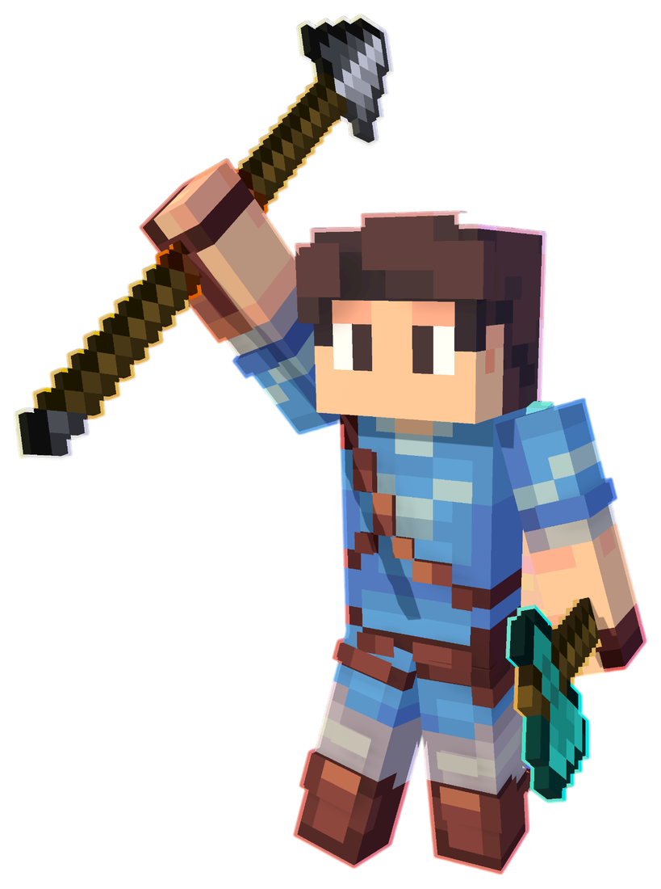

Анархичное выживание
Без лишних ограничений: правила открыты и опубликованы на сайте. Читать их стоит до первого входа, ведь играя на сервере, ты принимаешь их.
Читать правилаАнархичное выживание без лишних ограничений, продуманная экономика и администрация, которая всегда выходит на связь.

Преимущества
Сервер для тех, кто хочет играть по-своему, но при этом знает, что за ним следят и ему помогут.
Без лишних ограничений: правила открыты и опубликованы на сайте. Читать их стоит до первого входа, ведь играя на сервере, ты принимаешь их.
Читать правилаАукцион, дома, телепорты и донат-валюта Варды. Привилегии дают удобства: больше домов, слотов на аукционе и полезные команды.
Открыть магазинВопросы по оплате, блокировки, проверки: отвечаем в Telegram-боте, в Discord и по почте.
Как связатьсяЧиты и запрещённое ПО под запретом. Проверки проводятся только для их выявления, а если проверяющий просит лишнее, правила разрешают прервать проверку и сообщить администрации.
Про проверкиОнлайн, версия и состояние сервера в реальном времени. Показываем данные как есть, без поправок.
Смотреть статусСнимаешь видео про сервер? Выплаты в донат-валюте, статус Media и личный IP вида name.w-smp.in.
УсловияСтарт за минуту
Три шага от запуска игры до первого входа на сервер.
Нужна Java Edition. Открой «Сетевая игра» и нажми «Добавить сервер».
В поле «Адрес сервера» вставь mc.w-smp.in и подключись.
Правила действуют с первого входа. А привилегии и Варды можно взять в магазине в любой момент.
Правила сервераКатегории
Оплата проходит через Boosty. Подробная инструкция и что отправить для подтверждения — на отдельной странице.
Частые вопросы
Нужна Minecraft Java Edition. В игре открой «Сетевая игра», нажми «Добавить сервер» и введи адрес mc.w-smp.in.
Добавь товар в корзину, укажи ник и e-mail, прими условия оферты и перейди к оплате. Заказ можно оформить и через бота поддержки в Telegram.
Если нужен способ, который работает из любой страны, есть оплата через Boosty. Подробности на странице «Как оплатить».
Донат-валюта сервера. 1 ₽ = 1 Варда, сумма покупки от 10 до 10 000 ₽. При больших суммах действует скидка за объём, до 10%.
Да. В корзине включи переключатель «Сделать подарком» и укажи ник получателя.
Нет. По правилам сервера донат не переносится на другой аккаунт, а передача аккаунтов и продажа привилегий запрещены.
Можно купить услугу «Разбан» в категории «Другое». Она действует только на один аккаунт. Игрокам из ЧСП разбан не выдаётся.
Цены и оплата в рублях. Рядом с корзиной можно переключить валюту для просмотра, но курс при этом ориентировочный.
Напиши боту @w_smp_bot в Telegram, зайди в Discord или отправь письмо на w-smp@outlook.com. Все ссылки собраны на странице «Контакты».
Скопируй адрес, добавь сервер в Minecraft и заходи. Мы уже ждём.